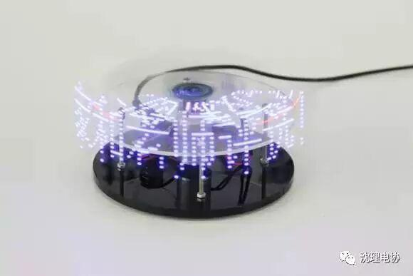
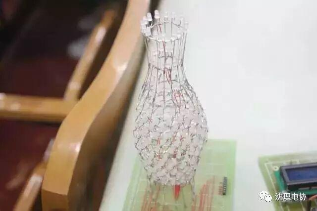
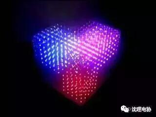
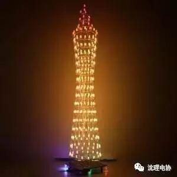
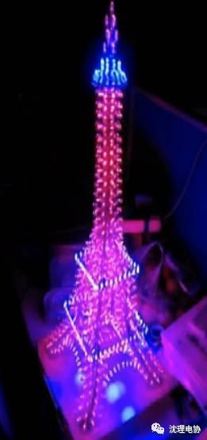
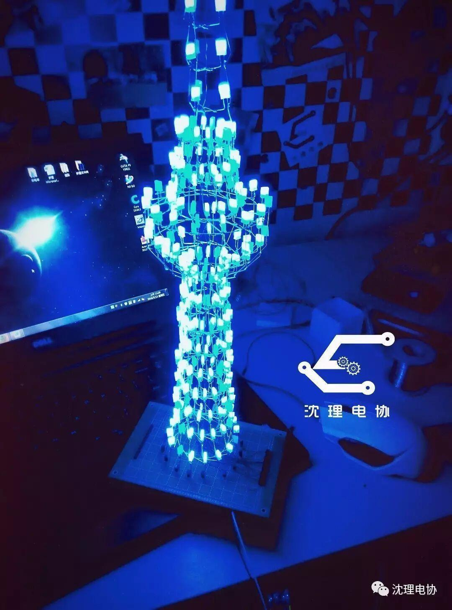
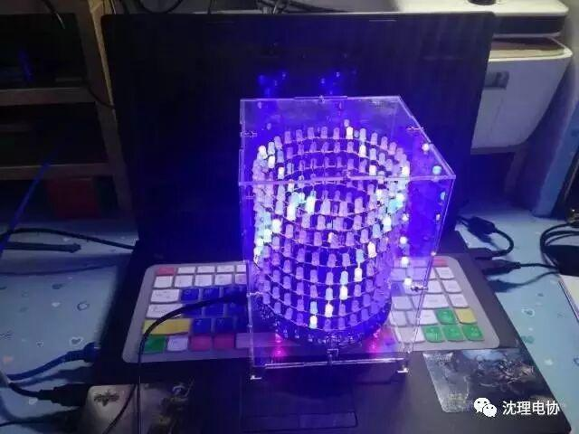

理工杯常规教学活动预告
理工杯LED设计大赛
点击上方“沈理电协”关注即可了解比赛及教学信息
通过诸位干事轰炸式的宣传，想必大家本次理工杯LED设计大赛已经有了一定的了解。这些天我部收到的报名信息也是越来越多，足已见同学们敢于创新，勇于实践的精神和对本次比赛的热情。我谨代表电协全体干事预祝所有参赛选手取得佳绩！

我对这次比赛可是充满期待，但还是莫名心慌...
咋啦？是不是有什么不懂？
感觉寄几关键技术都明白，就是不太会应用，说白了只有理论没有实践...
哈哈巧了，这礼拜综合楼A106的常规教学就讲这个，就是之前知识的综合应用，还有作品整体设计思路！
太好了，周五6:30我一定准时参加活动，到时候有什么不懂的也好问问学长！
| 活动具体安排 | |
| 6:30-6:50 | 由大二会员于综合楼A106教室为大一会员讲解前期讲过的知识和综合利用方法，作品整体设计思路 |
| 6:50-7:00 | 中场休息十分钟进行光立方成品展示 |
| 7:00-7:30 | 由大二会员于综合楼A106教室为大一会员讲解光立方的实现与拓展 |
7:30-7:50 | 由大二会员对所讲内容进行简单回顾，由大二会员对大一会员有疑问的地方进行简单答疑 |



往届优秀作品展示
光立方


广州塔
埃菲尔铁塔


东方明珠
光字母

光柱体

编辑：信息部 白金朋
了解更多 长按关注

东方明珠